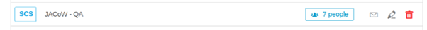
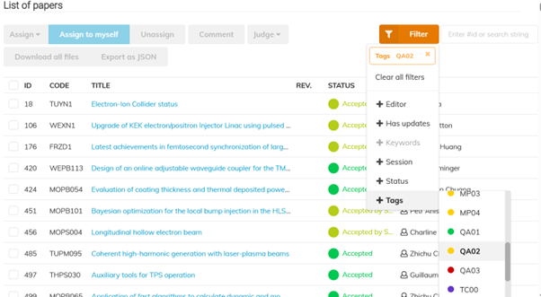
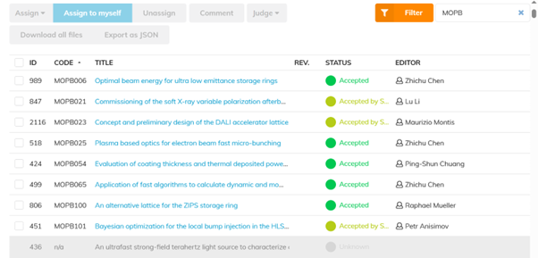
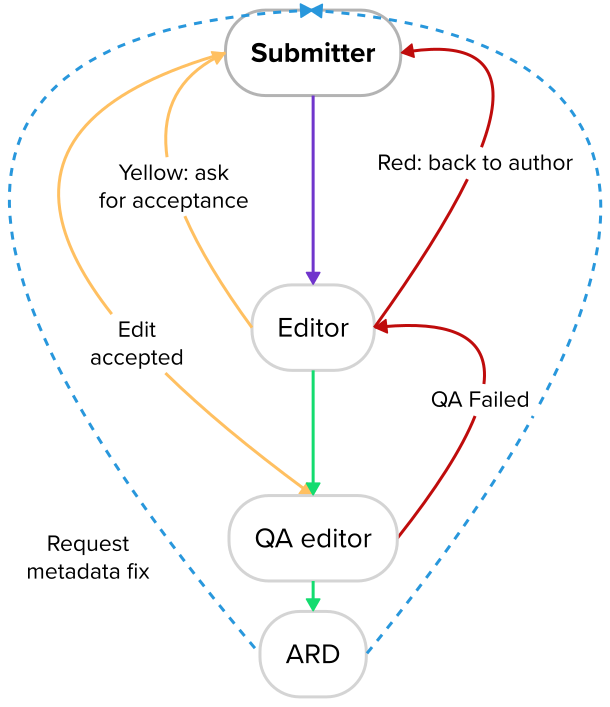
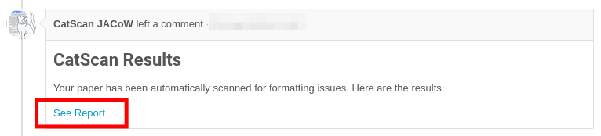
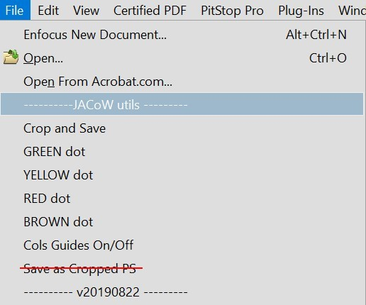
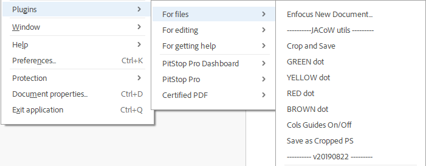

IPAC'25 Editing reference manual
Shadow Pangolis (by Maurizio Montis, songwriter)
This page performs better with this song playing in the background.
Lyrics
[Intro]
Under the lights of the 101 tower
We're running the night, paper by hour
Young pangolins in the digital shade
Making this conference the best ever made
[Verse 1]
我們藏在繁華的背後 (Behind the glam, we hide in code)
每天盯著稿件、審查流程走
Re-check that DOI, fix the name again
Still no upload? Come on, my friend!
[Pre-Chorus]
Every comma, every line
Making sure it all aligns
Some are late, some are wrong
But we keep moving on
[Chorus]
我們是影子穿山甲 (We are the shadow pangolins)
在黑夜裡努力閃耀啊 (Working hard while stars begin)
From Taipei to the global stage
Editors dancing page by page
Paper mountain, no retreat
Bit by bit we face the heat
等到最後的那一刻 (Till the final check is done)
我們一起慶祝這一段 (We will rise up with the sun)
[Verse 2]
Trackers crash, deadline near
喝了第三杯咖啡也不會怕 (No fear with a triple shot of black)
Reference wrong? Fix it fast
這裡的節奏沒人能超越 (This rhythm – unmatched, unstoppable)
[Bridge]
一字一句地重來
我們的努力沒白費
All these nights and all these days
Will become a shining blaze
[Final Chorus]
我們是影子穿山甲 (Shadow pangolins on the run)
默默改變世界的想法 (Silently shaping brilliant minds)
IPAC25 我們來了！(IPAC25, here we come!)
Now it’s time to have some fun
Dance it off, we’ve made it through
Papers clean and passion true
未來就在我們腳下 (The future’s under our paws)
一起跳舞吧！(Let’s celebrate it all!)
Content created with Suno.
Web References
-
IPAC'25 website: https://ipac25.org
-
IPAC'25 Indico event: https://indico.jacow.org/e/IPAC25)
-
JACoW templates: https://www.jacow.org/Authors
-
Instructions for Authors:
-
Paper Guideline: https://ipac25.org/authorGuidelines.asp
-
Paper submission: https://ipac25.org/authorSubmission.asp
-
Poster guidelines: https://ipac25.org/authorGuidelines.asp
-
Speaker preparation guidelines: https://ipac25.org//authorGuidelines.asp
-
 (
(Paper QA - Give it a go IPAC'25 QA Work Flow
The dependency of printed papers to facilitate workflows in SPMS and Indico for QA has often resulted in confusion and corruption due to, duplicate papers, and unprinted papers. Thus below is the proposed workflow we will try for IPAC'25.
Paper Editors
All paper editors will stop printing any of their completed Green papers, this will become the responsibility of the QA Editor.
Title Author Check
The Title Author Check will be conducted in parallel, best effort will be made to place QA Pass papers in QA Pass pile next to Title Author Check.
Stream 1
Title Author Check can take for this pile to review the Title Authors.
If problems are found which require the fix of the paper the QA Pass will have to be rolled back and paper status set to the appropriate state for editing by the Author or the Editor.
Stream 2
If there are no papers in the QA complete the Title Author Checker will select ready to check papers from the interface and conduct the review.
If problems are found which require modifying the paper they will approach the Editor for the paper and inform them. The Editor will rollback and make correction, or Judge Red so the Author can fix and upload again.
Corrections at the pre-QA stage will prevent further roll backs or QA Fail if discovered after QA Pass.
QA Editor
QA Editor Role Allocation
QA Editors is a Role, and before you can undertake QA Editing an admin needs to add your name to the Role JACoW - QA in the Indico Rolls Setup page. 
Setting up you Filters
Viewing only the papers which are ready for QA can de achieved by using the Filter in the Editing > List of Papers Page. You will click on the Filter, Select Tags > QA02. You should then see paper which have either Accepted by Submitter or Accepted.

Sort the List by program Code which will display the list sorted by Program Code which is typically by day.
Viewing the Papers you will QA
You will be advised the Day or Day and Session which you will be allocated to QA which is unique to yourself so other editors don’t start working on papers you are working on. For example “MOPB”, but typing this into the Text Box next to the Filter button, any other contributions will be greyed out leaving only the papers you will QA. 
Printing Papers
In your aAcrobat setting, goto Edit>Preferences>Identity and change the name to QA Print.
Once you are working on your group of papers, after clicking into a paper to QA you can download the last PDF and print with Green Dot.
Write the name of the editor who edited the paper on the top of the paper. If you are the Editor of the paper hand over the printed paper to another QA Editor.
QA - Quality Assurance procedure
Click here to get precise instructions on how to perform this with Indico.
-
Take the paper that you printed, and you did not process initially.
-
Open the PDF you printed. There are two minimum requirements for a paper to be accepted for publication on JACoW:
-
It meets the technical requirements (fonts, page size, performance, etc.).
-
Its general appearance is close to the template (i.e., the content fits within the margins and the title is in uppercase letters; Fig./Figure, missing punctuation, typos, and other minor errors do not matter at this point). Then perform the following checks:
-
The number of pages is in the allowed range for that presentation type.
-
All pages of the document display without error.
-
All pages of the document display in <5 seconds.
-
Check the margins once more.
-
Look carefully at the text and check equations and figures for strange or bad fonts.
-
At this stage we can accept minor problems, however. If in doubt, consult with the Editor-in-Chief.
##### If everything is OK - Writer your name in the comment box, Your Name, QA OK, set the comment not visible to Author Flag.
-
Choose Approve QA and submit.
-
Mark or write "QA OK", sign the paper, and then return all paperwork to the QA'd Passed folder on the Authors' reception desk
##### If anything is NOT OK
-
Add a comment in the Indico timeline describing the issues you spotted. This will help the editor fix them or get them back to the author. Make sure to include your name as the QA Editor.
-
Then, select Fail QA in Indico.
-
Mark the printed paper as FAILED and return it to the editor. The editing process will then restart.
Editor Computers
You have been placed at a workstation which has been selected based on you editing experises, and to distribute tranee editors amoungst experienced editors who can help them grow thier experties. You must stay on the same computer throughout the conference.
All of the software settings and preferences should already be set, but if you thinks something's wrong, please contact the editor-in-chief.
You will find on the Windows desktop a folder named PO (short for Proceedings Office). This is the only folder that is backed up, so please DO NOT RENAME OR MOVE IT. Use this folder for all the papers you are working on. There is also a folder named DONE inside PO (if missing, go and create it). When you are done processing a paper (successfully or not, it doesn't matter), create a sub-folder under the DONE folder and name it according to its paper code. Move all of that paper's files into the new sub-folder.
Example When working on paper MOPC999, all its files will stay in
C:\Users\XXXX\Desktop\PO
(i.e., the PO folder on your desktop).
When you're done, all the processed files of that paper should be moved to
C:\Users\XXXX\Desktop\PO\DONE\MOPC999
Programme codes explained
Example
MOPC999 = MO P C 999
<paper-code> = <day> <presentation-type> <location> <number>
BNF & explanation
<paper-code> ::= <day> <presentation-type> <location> <seq-number>
<day> ::= "SU" | "MO" | "TU" | "WE" | "TH" | "FR"
<presentation-type> ::= "X" | "Y" | "Z" | "A" | "B" | "C" | "P" | "U" | "V" | "E" | "W" | "F"
<location> ::= "P" | "D" | "N" | "M" | "S" | "B"
<number> ::= <digit> | <digit> <digit> | <digit> <digit> <digit>
| Day | Presentation Type | Location |
|---|---|---|
| SU - Sunday | X – Invited #1 | P - Plenary Hall, TICC |
| MO - Monday | Y – Invited #2 | D - Hall 101 (Ground Floor), TICC |
| TU - Tuesday | Z – Invited #3 | N - HAll 201, TICC |
| WE - Wednesday | A – Contributed #1 | M – Exhibit Hall A Magpie, TWTC |
| TH - Thursday | B – Contributed #2 | S – Exhibit Hall A Salmon, TWTC |
| FR - Friday | C – Contributed #3 | B – Exhibit Hall A Bear, TWTC |
| P – Poster | ||
| U – Industry #1 | ||
| V – Industry #2 | ||
| E – Entertainment | TICC - Taipei International Convention Center | |
| TWTC - Taipei World Trade Center | ||
Presentation type codes and paper length
| Type code | Paper length |
|---|---|
| X, Y, Z | Invited contributions: 5 pages + 1 for references only |
| U, V | Industry session: 5 pages + 1 for references only |
| A, B, C | Contributed Oral: 3 pages + 1 for references only |
| P | Poster: 3 pages + 1 for references only |
Editing a paper
Visual workflow

Paper statuses recap
-
Green dot- Perfect paper, also in JACoW size
- Paper can go to QA
-
Yellow dot- Source file changed to fix problems
- Author will proofread and approve or reject
-
Red dot- Extensive work necessary, author should fix and resubmit
Editing workflow, step-by-step
-
[Word source files only] check the CatScan results in the comments. They will help you spot any problems in the PDF. 
-
Try and edit the latest PDF file first. Follow the Paper Editing Checklist.
-
If the result is compliant with JACoW quality (both on screen and on print) you can upload to Indico and stick a
GREENdot ("Accept").- If you needed to do small fixes in the PDF, remember to upload it as well. Select Request approval (
YELLOW) and then Confirm and approve it to have it green directly
Go to step 6.
- If you needed to do small fixes in the PDF, remember to upload it as well. Select Request approval (
-
Otherwise, working on the source files is needed. Choose one of the following options
-
Lots of fixes are needed, this will take some time. Or, few fixes are needed but you will spend too much time (>10'). Or, you may be not able to fix it due to lack of information (missing figure, missing reference, etc.). Stick a
REDdot and ask the author to resubmit a better version. -
You can fix it quickly in the source file. Re-create the PDF and do all the checks again. Upload all the files (PDF+source) and Request approval (
YELLOW).NOTE: For Word files on Windows, USE »PDFMaker« from the Acrobat menu in Word. DO NOT USE »Adobe PDF Printer« nor »Save As PDF« in Word nor any »Generic PostScript Printer«.
Move on to another paper, back to step 1.
-
-
Whenever the paper is accepted (
GREEN) bring the paper copy to a QA editor for its last check.
How to print a paper
Print the dotted paper with the JACoW stamping tool in Acrobat:
-
Classic Acrobat interface: menu
File→GREEN dot -
New Acrobat interface:
Menu→Plugins→For files→GREEN dot
Note: No need to print Yellow and Red papers anymore.
Sometimes papers look good on screen and awful in print. Both media should be OK. If the PDF is not printable, proceed with the electronic steps only and then assign a red dot.
Suggestions to Indico, to IPAC'25+ organisers etc.
Please share your idea, comments, suggestions for a better organisation of such events, in particular about the use of Indico.
Open your browser to the Telegra.ph free online service: https://telegra.ph/
Here you can create a rich text page (text, images, etc.) editable only from your browser.
At the end of your editing be sure to Publish it (use the top-right Publish button), copy this page's URL and send it to the Editor-in-chief.
We recommend to create one page only per person, but feel free to edit more than one to separate contexts (e.g., Indico, general organisation, Acrobat editing, LaTeX...). In this case you'll get one URL per page. Be sure to save them all!